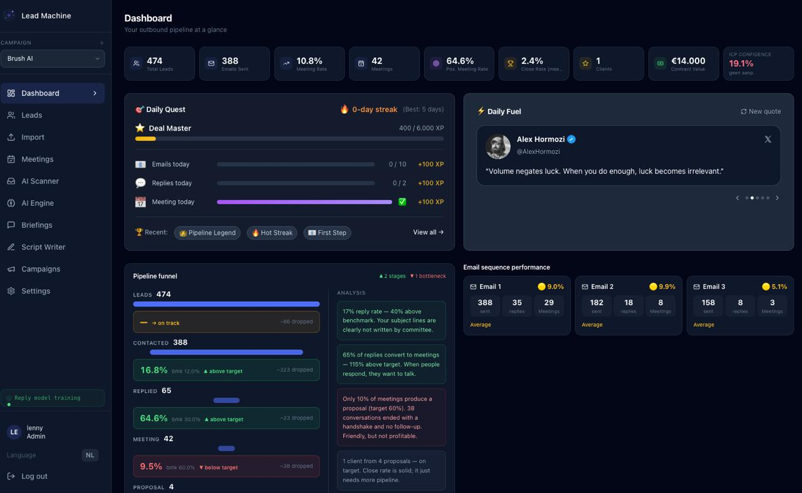
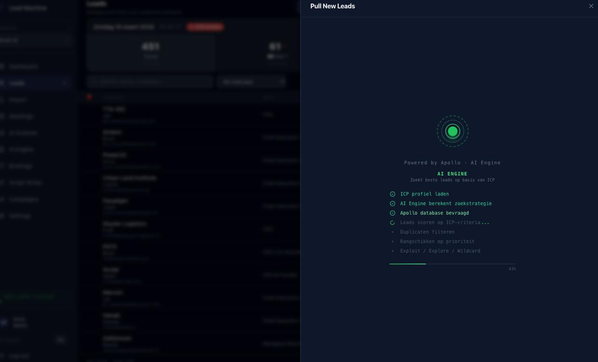
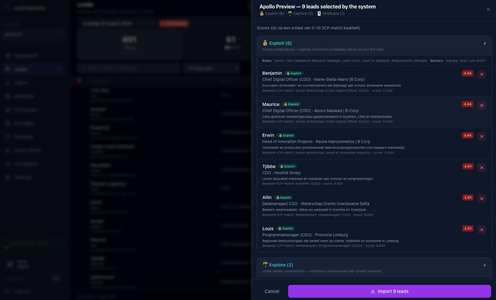
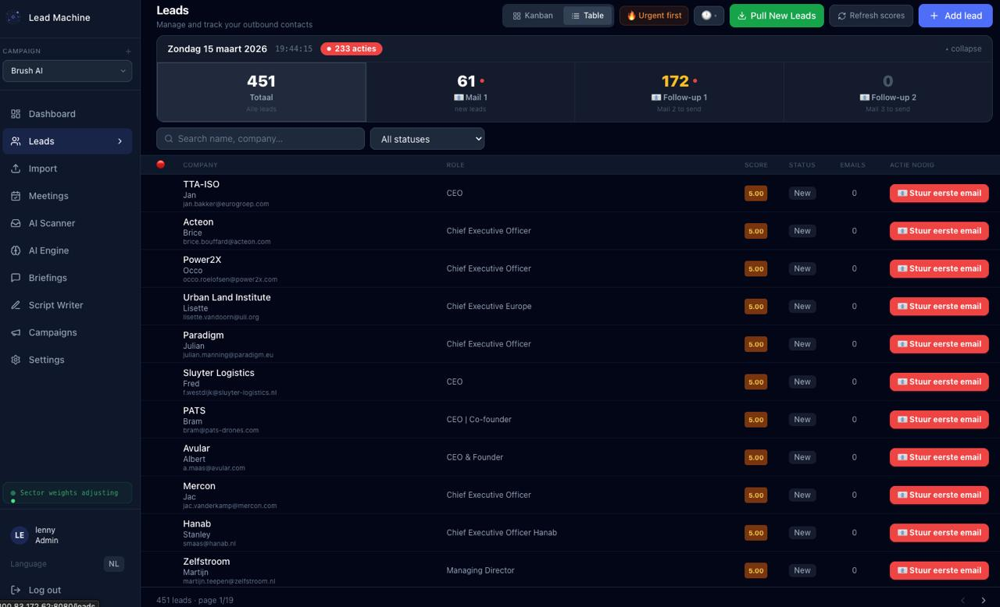
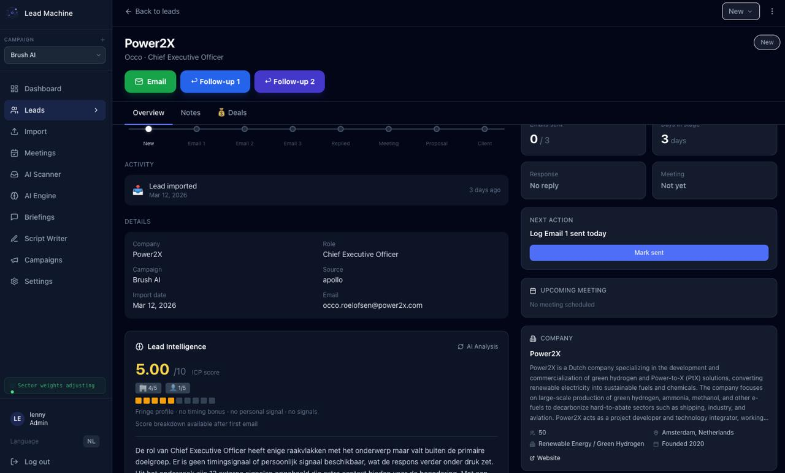
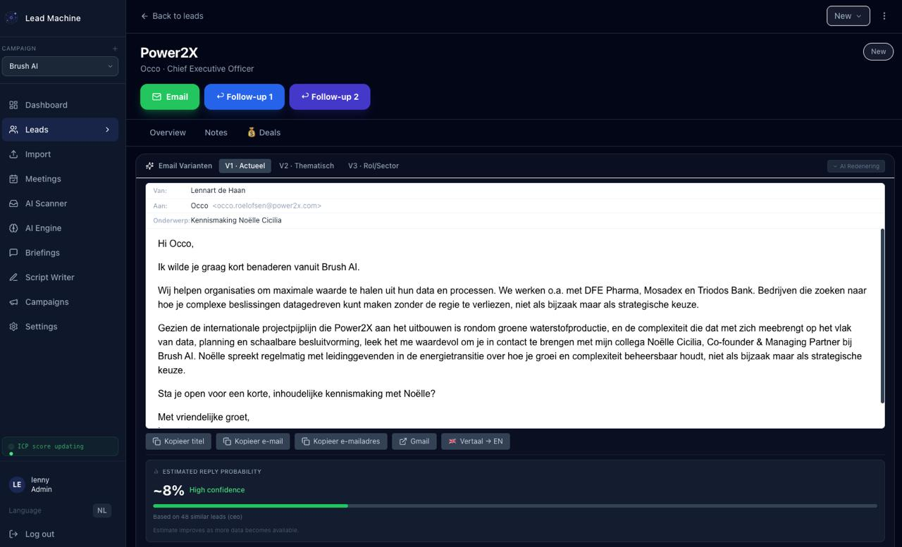
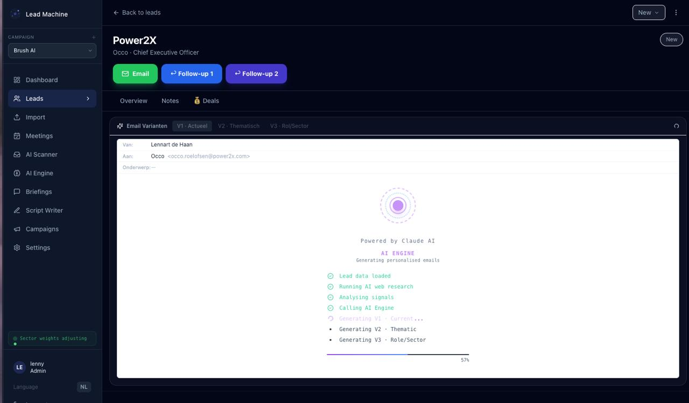
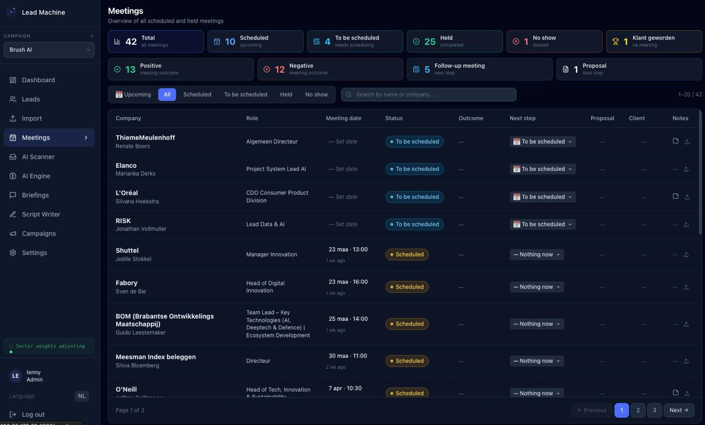
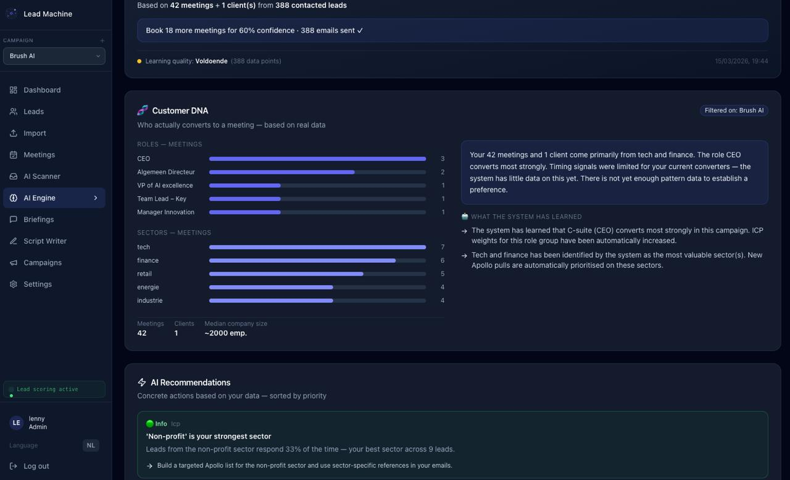

Lead Machine Manual
Everything you need to run a high-performance B2B outbound operation — from setting up your ICP to analysing what's working. Built for sales reps who want fewer manual steps and more meetings on the calendar.
New here? Start with Setup
Connect Gmail & Apollo, define your ICP, send your first email in 15 minutes.
Daily workflow
Check the Dashboard, pull leads, generate emails, log meetings.
Let the AI learn
Understand how Lead Machine improves ICP weights over time.
Setup Wizard
The Setup Wizard walks you through everything needed to go from a fresh account to live outreach. It takes roughly 10–15 minutes to complete. You can return to any step later via Settings.
Have your Apollo API key and Gmail account ready. You'll also want a short description of your ideal customer — industry, company size, and the job title you're targeting.
Wizard steps
Name your workspace and set the primary sender company (this appears in emails). If you're running multiple brands, you can add Campaigns later for each.
Authorize via Google OAuth. Lead Machine only requests send and compose permissions — it never reads your inbox. See Connecting Gmail for details.
Paste your Apollo API key. Lead Machine uses Apollo to search the company/people database and pull contact emails. Your plan determines how many email enrichments you have per month.
Set target industries, company size ranges, geographies, and the job titles you want to reach. This powers ICP scoring on every lead. You can refine this anytime.
Write 2–3 sentences describing what you offer and who it's for. This becomes the foundation for the AI email writer. Strong VPs lead to stronger emails.
Optional but highly recommended. Reference clients appear in email variants to add social proof. The AI picks the most relevant one per lead's industry.
Run a test pull of 5–10 leads to confirm everything is working. Review the draft list and approve before they enter the pipeline.
Connecting Gmail
Lead Machine uses Google OAuth to send emails on your behalf. It requests only send and compose access — it never reads, indexes, or modifies your inbox.
Authorization flow
Click Connect Gmail Account. A Google consent screen opens in a new tab.
Select the Google account emails should be sent from. This is typically your work address or the address your prospects know.
Approve the two permissions: Send email on your behalf and Compose email drafts. Click Allow.
You'll be redirected back to Lead Machine. The Gmail integration card shows a green checkmark and the connected address.
OAuth tokens are invalidated when you change your Google password or revoke app access. If emails start failing, go to Settings → Integrations and reconnect.
What Lead Machine can do with Gmail
| Action | Allowed |
|---|---|
| Send emails on your behalf | ✓ Yes |
| Create draft emails | ✓ Yes |
| Read your inbox | ✗ Never |
| Delete emails | ✗ Never |
| Access contacts or calendar | ✗ Never |
Connecting Apollo
Apollo.io is the lead database powering Lead Machine's pull functionality. Your Apollo API key gives Lead Machine access to search companies and people — and optionally enrich contact emails.
Finding your API key
Go to your Apollo account dashboard.
Find the API Keys section. Copy your master API key — this gives full search and enrichment access.
Go to Settings → Integrations → Apollo. Paste the key and click Verify & Save. Lead Machine runs a test search to confirm the key works.
Apollo credit usage
| Operation | Credits used |
|---|---|
| Company/people search | Free — no credits consumed |
| Email enrichment | 1 credit per lead |
| Bulk enrichment | 1 credit per lead (same rate) |
Lead Machine only enriches emails for leads you explicitly approve. Leads in the draft review step don't consume credits — enrichment happens after you approve the batch.
ICP Configuration
Your Ideal Customer Profile (ICP) defines who Lead Machine searches for, how it scores leads, and which email variants the AI generates. Getting this right is the most impactful setup step.
ICP dimensions
Select primary sectors with percentage weights (e.g., Fintech 40%, Retail 30%) to influence which leads score highest.
Set min/max employee ranges. Typically mid-market (50–500) converts best for B2B services.
Target titles (e.g., "Head of UX", "CTO"). Multiple titles can be added; AI uses all of them in search and scoring.
Country/region filter. Combined with Apollo's search to narrow leads to your target markets.
Block competitor companies or accounts you're already in contact with. They'll never appear in pull results.
Fine-tune scoring by adjusting how much each sector contributes to the ICP score (1–10 scale).
ICP score explained
Every lead receives an ICP score from 1–10. The score is computed by matching the lead's company attributes against your ICP dimensions. Higher-weight matches score higher.
| Score range | Meaning | Recommended action |
|---|---|---|
| 8–10 | Strong ICP match | Prioritize — generate email immediately |
| 5–7 | Partial match | Review manually, proceed if context looks good |
| 1–4 | Weak match | Skip or archive unless you have specific context |
The AI Engine monitors which lead types convert to meetings and adjusts ICP weights over time. You'll see these adjustments in the Learnings tab.
Dashboard
The Dashboard is your command center. Open it each morning to see where the pipeline stands, what needs attention today, and how the overall outreach program is performing.

KPI cards
| Metric | What it measures |
|---|---|
| Total leads | All leads in the system across all statuses |
| Emails sent | Total outreach emails dispatched (across all sequences) |
| Meeting rate | % of emailed leads who converted to a meeting |
| Meetings held | Meetings that took place (as logged in the Meetings module) |
| Pipeline value | Estimated contract value from proposals and clients in the pipeline |
Pipeline funnel
The funnel shows how leads flow through each stage: New → Email 1 → Email 2 → Email 3 → Replied → Meeting → Proposal → Client. Below the funnel, the AI Analysis panel surfaces insights: drop-off points, which email step is underperforming, and suggestions to improve conversion.
Daily Quest
Lead Machine uses light gamification to keep outreach consistent. Each day you have a small set of goals — pull leads, send emails, log a meeting outcome. Completing quests earns XP and builds your streak counter. Streaks unlock badges visible on your profile.
If you're not sure what to do each morning, the Daily Quest tells you exactly: how many leads to pull, how many emails to send, and whether any leads need a follow-up today.
Daily Fuel
Below the quest, the Daily Fuel panel surfaces 3 intelligence items: recent news about your top prospects, industry signals, or LinkedIn activity relevant to active leads. Use these for email hooks or meeting talking points.
Email sequence performance
Cards at the bottom show performance per email step (Email 1, 2, 3). Each card shows reply rate and the AI's assessment of that step's effectiveness.
Pulling New Leads
Pulling leads is how new prospects enter your pipeline. Lead Machine searches Apollo's database using your ICP, scores the results, and presents a draft list for your review before anything is committed.

Starting a pull
A modal opens with the animated radar and pull configuration panel.
Three strategies are available (see below). Each trades off between precision and discovery.
Typically 10–25 leads per pull. Smaller batches are easier to review; larger batches are more efficient if you trust your ICP config.
The live checklist shows progress: Search → Filter → Score → Deduplicate → Draft. Takes 15–30 seconds.
Leads shown with ICP scores and company info. Approve individually, skip others, or approve all. Only approved leads enter the pipeline and consume Apollo credits.
Batch strategies
| Strategy | What it does | Best for |
|---|---|---|
| Exploit | Pulls leads closely matching your proven ICP — high scores, similar to past wins | Volume days, when pipeline is thin |
| Explore | Pulls leads from adjacent segments — slightly outside your main ICP | Testing new markets or title variants |
| Wildcard | Broader search with looser ICP criteria — varied results, some surprises | Discovery — finding unexpected fit |

Deduplication
Lead Machine automatically deduplicates against your existing pipeline. If a lead (matched by email or LinkedIn URL) already exists in any status, they won't appear in the draft list.
Apollo preview
Before approving, click any lead in the draft list to open the Apollo Preview panel. This shows full company details, the lead's LinkedIn, recent funding rounds, and the exact ICP signals that drove the score.
Leads Table
The Leads page is where all active prospects live. Search, filter, sort, and action leads — or switch to Kanban view to see pipeline stages visually.

Table columns
| Column | Description |
|---|---|
| Name / Company | Lead name with company — click to open Lead Detail |
| Title | Job title as retrieved from Apollo |
| ICP Score | 1–10 score. Color-coded: green (8+), amber (5–7), red (1–4) |
| Status | Current pipeline stage |
| Last Activity | Most recent action taken |
| Actions | Quick buttons: Write email, Open LinkedIn, Archive |
Filtering & search
Search by name, company, title, or email. Instant results as you type.
Show only leads in a specific pipeline stage — useful for processing a whole batch at once.
Filter to show only leads above a minimum ICP threshold (e.g., 7+).
Focus on one segment at a time when running multiple campaigns.
Pipeline stages reference
| Stage | Meaning |
|---|---|
| New | Lead approved, no email sent yet |
| Email 1 | First email sent, awaiting response |
| Email 2 | Follow-up sent after no reply to Email 1 |
| Email 3 | Final email in the sequence |
| Replied | Lead responded — move to meeting or nurture |
| Meeting | Meeting scheduled or held |
| Proposal | Proposal sent or in progress |
| Client | Deal closed — active client |
| Archived | Not a fit or unsubscribed |
Lead Detail
The Lead Detail page is the full profile for a single prospect. Everything about them lives here: their pipeline position, the emails you've sent, company intel, AI signals, your notes, and deal information.

Pipeline stage tracker
A horizontal stage bar at the top shows where this lead sits. Click any stage to manually move the lead there. The system also advances leads automatically when emails are marked as sent.
Tabs
| Tab | What's inside |
|---|---|
| Overview | Company info, ICP score breakdown, Apollo data, LinkedIn link |
| Notes | Free-text notes about this lead — call notes, context, anything worth remembering |
| Deals | Deal value, stage, probability, and next steps if a deal is in progress |
| Activity | Chronological feed of every action: emails sent, status changes, notes added |
Email action buttons
Prominent CTA buttons let you jump straight to email generation for each sequence step. The button for the current/next step is highlighted. Past steps are shown as sent with a timestamp.

Lead Intelligence panel
Below the main tabs, the Lead Intelligence panel shows AI-generated signals for this specific lead: recent company news, LinkedIn activity, funding announcements, and trigger events that could be used as email hooks.
The Email Writer's V1 (Actueel/News-based) variant is built specifically to incorporate these signals. If the intelligence panel shows a recent news item, V1 will reference it.
Email Generation
The Email Writer is Lead Machine's core AI feature. For each lead, it generates three distinct email variants tailored to the lead's role, company, and industry — using your value proposition, reference clients, and the lead's intelligence signals.

The three variants
| Variant | Angle | When it works best |
|---|---|---|
| V1 — Actueel | News-based. References a recent event or signal specific to the lead's company | When there's fresh intelligence in the Lead Intelligence panel |
| V2 — Thematisch | Theme-based. Ties your offer to a broad challenge or trend in the lead's industry | When there's no specific news hook but a clear industry angle |
| V3 — Rol/Sector | Role & sector specific. Speaks to the lead's job title and typical pain points of their function | Default when V1 and V2 don't fit — always relevant |

AI reasoning panel
Each variant shows an expandable AI Reasoning section explaining why the email was written the way it was: which signals were used, which reference client was selected, and the logic behind the opening hook.
Reply probability
Lead Machine shows an estimated reply probability (e.g., ~8%) based on historical performance of similar emails to similar profiles. Variants with higher estimated probability are shown first.
Actions
Copy subject + body with one click. Paste into any email client.
Opens Gmail compose with subject and body pre-filled. Add the recipient and send.
Toggle between English and Dutch across all three variants simultaneously.
Not happy with a variant? The AI will try a different angle using the same signals.

Sending flow
From Lead Detail, click the Email CTA button for the current sequence step.
Read all three. Pick the one that feels most natural and relevant. Edit freely — they're a starting point, not a final draft.
Send via Gmail. Once sent, click Mark as Sent in Lead Machine to advance the lead's pipeline stage and log the activity.
Lead Machine doesn't read your Gmail — it only knows about sends you manually mark. If you forget to mark, the pipeline stage won't advance and follow-up reminders won't trigger correctly.
Meetings
The Meetings module tracks every intro call, pitch, and follow-up. Use it to log outcomes, sync with Google Calendar, and build a record of your pipeline conversations.

Meeting statuses
| Status | Description |
|---|---|
| To schedule | Lead replied positively — meeting not yet booked |
| Scheduled | Calendar invite sent, meeting upcoming |
| Held | Meeting took place — outcome logged |
| No-show | Lead didn't attend — follow up to reschedule |
Logging a meeting
From Lead Detail or the Leads table, advance the lead to the Meeting stage when they agree to meet.
Set the date/time, meeting format (Zoom/Teams/physical), and any pre-meeting notes.
Mark as Held and select an outcome from the list below.
Log key points from the call. These feed into the AI Engine and help generate better follow-up emails.
Google Calendar integration
When Google Calendar is connected, Lead Machine creates calendar events for scheduled meetings. Events appear in your primary calendar under the Envoya Lead Machine label.
Outcome types
| Outcome | Next step in pipeline |
|---|---|
| Positive interest | Stay in Meeting stage; schedule next call or send proposal |
| Proposal requested | Advance to Proposal stage |
| Follow-up required | Stay in Meeting; reminder set for re-engagement |
| Not a fit | Archived with reason logged |
| Referred elsewhere | Archived with referral note |
Nurture
Not every replied lead is ready to buy today. The Nurture module keeps warm leads alive — tracking touches, surfacing re-engagement signals, and prompting you when the timing looks right to reach out again.
What qualifies as a nurture lead
- →They replied but said "not right now" or "check back in Q3"
- →A meeting resulted in "follow up in X months"
- →You manually moved them (strong ICP match, just not the right time)
Nurture signals
The lead moved to a new company or got promoted — high relevance signal for re-engagement.
Funding round, new product launch, or expansion announcement.
The "check back in X months" date has passed — automatic reminder to reach out.
The lead posted content relevant to your offering — a natural conversation opener.
Re-engagement flow
When a signal fires, the lead appears in your Nurture queue with the signal highlighted. Generate a tailored re-engagement email (the AI uses the signal as the hook) or dismiss if the timing still isn't right.
AI Engine & Learnings
The AI Engine is Lead Machine's self-improving layer. It monitors what's working, adjusts ICP weights, and surfaces insights about your outreach — getting smarter the more you use it.

How it learns
The AI Engine runs a learning cycle after every 5 logged meeting outcomes (or weekly, whichever comes first). It analyzes:
Which industries, titles, and company sizes converted to meetings vs. those that didn't reply.
Which variant (V1/V2/V3) got the most replies for which lead type.
Whether intelligence signals used in emails correlated with better reply rates.
Whether Email 2 or Email 3 is recovering more leads than expected.
Reviewing learnings
The Learnings page shows a timeline of learning events with human-readable summaries: "Leads in Fintech with 50–200 employees convert at 2× the average rate. Increasing Fintech ICP weight from 6 to 8."
You can accept, reject, or manually override any learning. Rejected learnings are noted but not applied — the system learns from your override.
Training timeline
A visual timeline shows when learning events occurred, what data was used, and the resulting changes to ICP weights or email strategies. Useful for auditing how the system has evolved and correlating changes with pipeline performance.
The AI Engine needs outcome data to learn. The more consistently you log meeting outcomes and mark emails as sent, the faster and more accurately it can adjust. Aim to log outcomes within 24 hours of each meeting.
Reports
Reports give you a structured view of pipeline health, email performance, and conversion trends over time. Use them for weekly reviews, team updates, or to spot where your funnel needs work.
Available reports
| Report | What it shows |
|---|---|
| Pipeline Funnel | Volume at each stage, drop-off rates between stages, average time in each stage |
| Email Performance | Per-variant reply rates, best-performing subject lines, performance by industry segment |
| Conversion Metrics | Lead-to-meeting rate, meeting-to-proposal rate, proposal-to-client rate |
| ICP Performance | Conversion rates broken down by ICP dimension — powered by AI Engine data |
| Activity Log | Full chronological log of all actions, filterable by date range and lead |
Date ranges & filters
All reports support custom date ranges. Compare this month vs. last month, or look at a specific campaign period. Filter by campaign when running multi-brand outreach.
Exporting
Export any report as CSV or PDF. Useful for sharing with stakeholders or importing into external BI tools.
Script Writer
The Script Writer is where you define the messaging framework that powers the Email Writer. Think of it as the creative brief the AI works from — update it when your positioning evolves or when you want to test new angles.
Components
| Component | Description |
|---|---|
| Value Proposition | Your core "what we do and for whom" in 2–3 sentences. Used in every email as the offer statement |
| VP Variants | Angle-specific variants for different company types. The AI picks the best fit per lead |
| Reference clients | Library of client names + sectors for social proof. AI selects the most relevant one per lead's industry |
| Hooks library | Tested opening hooks. Add your own or accept AI suggestions based on performance data |
| CTA variants | Different call-to-action phrasings to test (e.g., "15 min call" vs. "quick intro") |
Keeping the script fresh
Review your Script Writer every 4–6 weeks. Update the Value Proposition when your offering evolves, add new reference clients as deals close, and retire hooks that the AI Engine flags as underperforming.
The more specific your reference clients and VP variants, the more relevant the AI's emails will be. "We help B2B SaaS companies with 50–300 employees extract value from their CRM data" produces far better output than "we help companies with AI."
Campaigns
Campaigns let you run separate outreach programs with distinct ICPs, messaging, and sender accounts — all from one Lead Machine workspace. Useful if you're running outreach for multiple companies or segments simultaneously.
When to use campaigns
- →Running outreach for two brands with different ICPs (e.g., Brush AI and Jungle Minds)
- →Testing a new vertical with its own messaging before folding into the main campaign
- →Sending from a different Gmail address per campaign
Campaign settings
| Setting | Description |
|---|---|
| Campaign name | Internal label, not visible to leads |
| Sender account | Which connected Gmail account to send from |
| ICP config | Campaign-specific ICP — overrides workspace default |
| Script Writer | Campaign-specific VP and reference clients |
| Sector weights | Custom sector scoring independent per campaign |
| Exclusion list | Companies to never pull for this campaign |
| Status | Active / Paused / Archived |
Campaign-level reporting
The Reports module lets you filter by campaign, so you can compare performance across your different outreach programs side by side.
Settings
Settings is where you configure your workspace, manage users, and control notifications. Most settings are configured once during onboarding and rarely need to change.
Organization
| Setting | Description |
|---|---|
| Workspace name | Your organization name as shown in the header |
| Default timezone | Used for scheduling and meeting time display |
| Default language | EN or NL — affects default email language in the writer |
| Subscription | Current plan, billing info, and usage stats |
Users & permissions
| Role | Access |
|---|---|
| Admin | Full access: settings, billing, user management, all leads |
| Member | Full access to leads and email generation; no billing or user management |
Notifications
- →Daily quest reminder (configurable time)
- →Nurture signal fired for a lead
- →AI Engine learning cycle completed
- →Meeting reminder (1 hour before)
Integrations
Lead Machine connects to a small set of external tools. All integrations are managed in Settings → Integrations.
| Integration | What it powers | Required |
|---|---|---|
| Gmail (OAuth) | Email send / compose, Gmail compose pre-fill | Required |
| Apollo API | Lead search, contact enrichment, company data | Required |
| Brave Search API | Real-time company news and web signals for Lead Intelligence | Recommended |
| Google Calendar | Meeting sync, calendar event creation | Optional |
Getting a Brave Search API key
Sign up for a free or paid tier. The free tier covers several thousand queries per month — sufficient for most users.
Under your account, create a new API subscription key.
Settings → Integrations → Brave Search. Paste and save. Lead Intelligence will start populating within minutes.
Changelog
What's new in each version of Lead Machine.
v1.4.6 April 1, 2026
- AI Engine learning cycle now runs automatically after every 5 logged meeting outcomes (was weekly-only)
- Email Writer: reply probability estimates now shown per variant with historical confidence range
- Lead Intelligence: improved signal relevance scoring using Brave Search API integration
- Nurture: new LinkedIn activity trigger — surfaces leads who recently posted relevant content
- Dashboard: Daily Fuel panel now shows 3 intelligence items (was 2) with source links
- Pull Leads: draft approval flow redesigned — approve/skip per lead with inline Apollo preview
- Reports: new ICP Performance report showing conversion rates broken down by ICP dimension
- Campaigns: sector weights now configurable per campaign independently
- Email Writer: EN↔NL translation now available on all three variants simultaneously
- General: dark mode rendering improvements on Safari and Firefox
- Performance: lead table loads 40% faster for workspaces with 500+ leads
v1.4.5 March 14, 2026
- Script Writer: VP variants now support per-industry overrides
- Meetings: Google Calendar sync now bidirectional — cancellations reflected in Lead Machine
- Leads table: new bulk-action toolbar for batch status changes
- AI Engine: training timeline now shows before/after ICP weight comparison
- Bug fix: Gmail compose pre-fill now handles special characters correctly
v1.4.0 February 2026
- Multi-campaign support introduced
- Lead Intelligence panel added to Lead Detail
- Nurture module launched (beta)
- Daily Quest gamification system
- Batch strategies (Exploit / Explore / Wildcard) for pull configuration